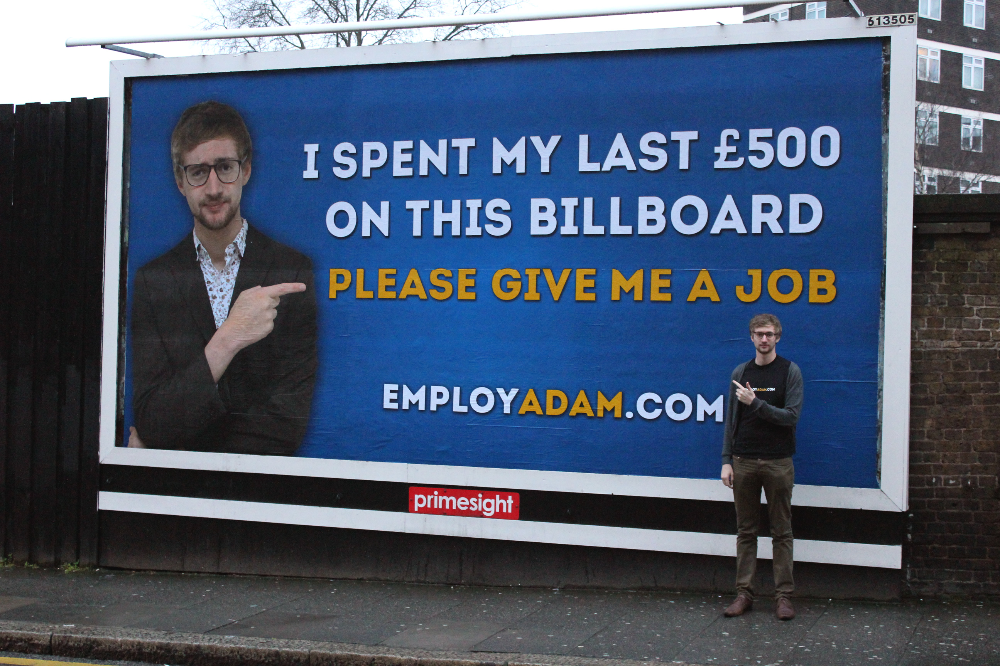

The idea of creating my personal website started in 2013, when the website employadam.com became viral.
Adam Pacitti, a fresh graduate from the University of Winchester, was struggling to find a stable job. Therefore, he created a website and then advertised this new website on a billboard. This marketing campaign helped him get enough recognition to get employed.

Adam Paccitti alongside his billboard.
Much like Adam, even I wanted my personal online space where I can showcase myself. The aim of the website is not really to make myself employable but rather to create something targeted for the general public while learning something new.
This website represents my first ever personal project. I wanted to create a very basic website using simple web design techniques and using only HTML and CSS. I had no previous knowledge of either languages so I had to start web design from scratch.
Since I had no previous HTML/CSS experience, I started by doing the codecademy tutorials for HTML and CSS followed by a number of courses including 'Make a Website' and 'Make a Website Projects.' I also followed most of The Odin Project to strengthen the previously learned techniques. Although I did learn some JavaScript, I decided to keep this project as simple as possible and stay away from JavaScript. Future revisions of the website might contain some elements of JavaScript. Personally, I feel that I lack the creative edge, thus I needed some inspiration for the colour scheme and the general format of the website. I looked up a number of websites similar to mine to get a sense of how to structure my website. The design was inspired by the example given in the HTML & CSS course given on shayhowe.com.
Apart from the challenges encountered using HTML and CSS, I also had to learn the process of buying a domain and hosting the actual website. This process, although considered trivial, was new to me since I had never created/hosted my own website before.
Personally, I am quite happy with the end product. The fact that I managed to start a project and finish it is an accomplishment in itself, since this was the first project I actually finished. As time goes by, I will update this website when necessary.
The GitHub repository for this website can be found by clicking the following link.